Редактор логики¶
Содержание
Основы¶
Визуальное программирование осуществляется путем создания нодового дерева логики в окне нодового редактора. С помощью Logic Editor можно существенно расширить функциональность сцены, не прибегая при этом к программированию.

Для активации логики, на вкладке настроек сцены Blender необходимо установить галочку Logic Editor и добавить/выбрать активное нодовое дерево:

Для редактирования дерева логики необходимо перейти в Редактор Нод (Node Editor) выбрать тип нодового дерева Blend4Web logic:

Затем выбрать дерево для редактирования:
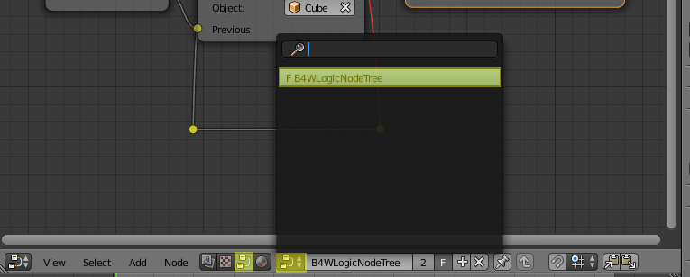Создание нод осуществляется привычным для Blender сочетанием клавиш Shift+A.
Ноды - это логические блоки, выполнение которых начинается с Entry Point, которая имеет один единственный выход. Почти все остальные ноды помимо одного или двух выходов имеют также входы, таким образом они могут быть вставлены в любое место в дереве. Ноды без выходов, например Page Redirect, могут быть вставлены только в конец какой-либо ветви. Ноды с двумя выходами позволяют ветвить алгоритм в зависимости от успеха/провала указанного условия, например Conditional Jump.
Для реализации сложной логики предусмотрены переменные, которые могут иметь как числовые, так и строковые значения. Переменные могут быть использованы для хранения какого-либо состояния сцены (например, это может быть счётчик проигрываемых анимаций, количество жизней, оставшихся у персонажа и т.д.).
Пример использования редактора логики:

Ниже перечислены все доступные ноды.
Control Flow¶
Entry Point¶
Является точкой начала выполнения скрипта. Использование нескольких точек входа позволяет эмулировать многопоточное выполнение.
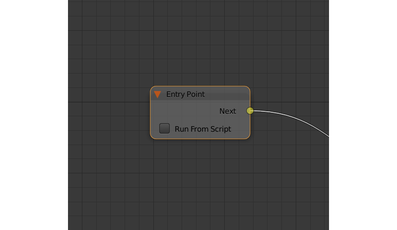Входные параметры¶
Отсутствуют.
Выходные параметры¶
- Next
Следующая нода.
Внутренние параметры¶
- Run From Script
Если этот параметр активирован, точка входа может быть запущена с помощью API, используя метод run_entrypoint.
Switch Select¶
Позволяет отследить событие выбора какого-либо объекта из списка объектов.

Входные параметры¶
- Previous
Предыдущая нода.
Выходные параметры¶
- <имя объекта> Hit
Этот параметр передаёт управление следующей ноде в случае, если выбран объект, упомянутый в его названии. По умолчанию нода
Switch Selectимеет один параметр этого типа, также присутствует возможность создавать новые и удалять уже существующие (нода может и не иметь ни одного такого параметра).- Miss
Этот параметр передаёт управление следующей ноде в случае, если выбран любой из объектов со свойством
Selectable, не из числа объектов,указанных в данной ноде.
Внутренние параметры¶
- Object
Один из объектов, доступных для выбора пользователю. Такие параметры создаются и удаляются автоматически при создании или удалении выходных параметров типа
Hit.
Delay¶
Позволяет установить задержку (в секундах) перед выполнением следующей ноды.
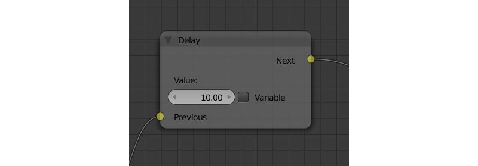Входные параметры¶
- Previous
Предыдущая нода.
Выходные параметры¶
- Next
Следующая нода.
Внутренние параметры¶
- Value
Время (в секундах), на которое задерживается передача управления следующей ноде. По умолчанию равно нулю. Может быть задано в явном виде или же взято из переменной (в случае, если активирован параметр
Variable).
Conditional Jump¶
Перейти к указанной ноде в случае выполнения выбранного условия. В качестве параметров условия (операндов) могут выступать также переменные, которые активируются с помощью соответствующих переключателей.

Входные параметры¶
- Previous
Предыдущая нода.
Выходные параметры¶
- True
Утверждение истинно.
- False
Утверждение ложно.
Внутренние параметры¶
- Condition
Логическое утверждение. Может иметь один из следующих типов:
Equal (=) - первый операнд равен второму.
Not Equal (!=) - первый операнд не равен второму.
Less Than (<) - первый операнд меньше второго.
Greater Than (>) - первый операнд больше второго.
Less Than Or Equal (<=) - первый операнд меньше либо равен второму.
Greater Than Or Equal (=>) - первый операнд больше либо равен второму.
- Operand1
Первый операнд логического выражения. Может быть числом либо строкой (если включена опция
String Operators). Может быть задан в самой ноде либо с помощью ссылки на одну из переменных (если включена опцияVariable).- Operand2
Второй операнд логического выражения. Аналогичен первому.
- String Operands
Если эта опция включена, то первый и второй операнды могут быть строками (как установленными вручную, так и взятыми из переменной).
JS Callback¶
Используется для вызова callback-функции, заранее заданной в вашем Blend4Web-приложении.
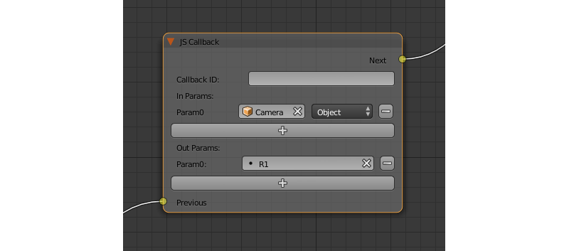Входные параметры¶
- Previous
Предыдущая нода.
Выходные параметры¶
- Next
Следующая нода.
Внутренние параметры¶
- Callback ID
ID JavaScript-функции, которая будет вызываться нодой.
- In Params
Список входных параметров функции. Каждый параметр может представлять собой либо переменную, либо ссылку на объект сцены. Количество входящих параметров может быть настроено. По умолчанию список пуст.
Входные параметры передаются callback-функции в виде массива, который используется в качестве первого аргумента функции.
- Param <param_number>
Задаёт входящий параметр. Параметр может быть как переменной (
R1по умолчанию), так и ссылкой на объект сцены, в зависимости от значения параметраType(у каждого входного параметра всегда есть соответствующий параметрType).- Type
Тип соответствующего входного параметра. Может иметь одно из двух значений:
Variable(в этом случае в качестве параметра будет использована одна из переменных) илиObject(ссылка на объект сцены).- Out Params
Список выходных параметров. По умолчанию пуст. Количество выходных параметров поддаётся настройке.
Массив, состоящий из выходных параметров, используется в качестве второго аргумента callback-функции.
- Param <param_number>
Задаёт переменную, которая будет использоваться в качестве одного из выходных параметров. По умолчанию используется переменная
R1.
Animation¶
Play Timeline и Stop Timeline¶
Позволяют управлять NLA анимацией. Play Timeline проигрывать участок NLA, начиная с кадра, на который указывает маркер. Анимация воспроизводится до следующего маркера, либо до конца шкалы времени сцены, после чего управление переходит к следующей ноде. Stop Timeline останавливает воспроизведение.
Входные параметры¶
- Previous
Предыдущая нода.
Выходные параметры¶
- Next
Следующая нода.
Внутренние параметры¶
- Start Marker
Кадр, с которого должна воспроизводиться анимация. Если не указан, анимация воспроизводится с первого кадра и может работать некорректно.
- End Marker
Кадр, на котором проигрывание анимации должно остановиться. Если не указан, анимация воспроизводится до окончания шкалы времени и может работать некорректно.
Get Timeline¶
Эта нода используется для получения текущего кадра NLA-анимации или таймлайна.

Входные параметры¶
- Previous
Предыдущая нода.
Выходные параметры¶
- Next
Следующая нода.
Внутренние параметры¶
- NLA Timeline
Если этот параметр активирован, нода будет возвращать текущий кадр NLA-анимации. Если параметр не активирован, нода будет возвращать текущий кадр таймлайна. Включено по умолчанию.
- Destination
Задаёт переменную, в которую будет сохранено значение текущего кадра. По умолчанию имеет значение
R1.
Play Animation¶
Используется для воспроизведения анимации объекта. Проигрываемая анимация может иметь один из трёх типов:
Обычный Action:
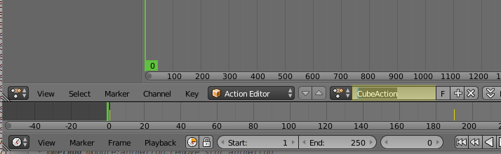Шейдерный Action:

Система частиц:
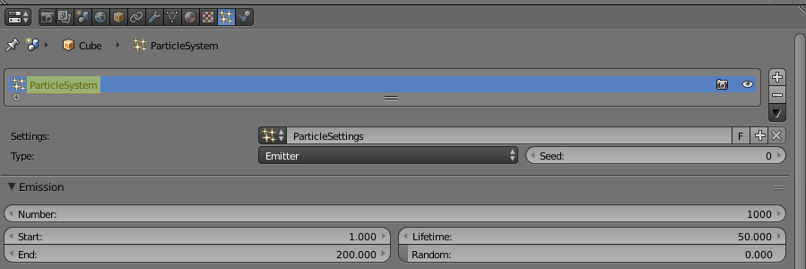Входные параметры¶
- Previous
Предыдущая нода.
Выходные параметры¶
- Next
Следующая нода.
Внутренние параметры¶
- Object
Имя объекта, анимацию которого следует воспроизвести.
- Anim. Name
Имя анимации, которую следует воспроизвести. В случае, если имя анимации не указано, проигрывается вся временная шкала.
- Behavior
Задаёт поведение анимации. Может иметь одно из следующих значений:
Finish Stop - анимация воспроизводится один раз.
Finish Reset - анимация воспроизводится один раз, после её завершения объект возвращается в исходное состояние.
Loop - анимация воспроизводится циклически до тех пор, пока не остановлена с помощью ноды
Stop Animation.
- Do Not Wait
Если этот параметр активирован, нода
Play Animationпередаст управление следующей ноде сразу после начала воспроизведения анимации. В противном случае управление будет передано только после окончания анимации.
Camera¶
Move Camera¶
Позволяет перемещать камеру, в том числе с плавной интерполяцией положения.
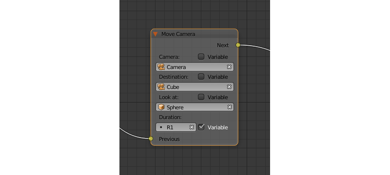Входные параметры¶
- Previous
Предыдущая нода.
Выходные параметры¶
- Next
Следующая нода.
Внутренние параметры¶
- Camera
Камера, которую необходимо переместить.
- Location
Объект, к которому перемещается камера. После того, как перемещение завершится, координаты камеры и объекта будут совпадать.
- Target
Объект, в направлении которого камера будет развёрнута после перемещения.
- Duration
Время (в секундах), которое займёт перемещение. По умолчанию равно нулю (в этом случае камера перемещается мгновенно). Может быть задано вручную или с помощью ссылки на переменную (эта возможность появляется при активации параметра
Variable).
Set Camera Move Style¶
Используется для задания нового режима перемещения камеры.
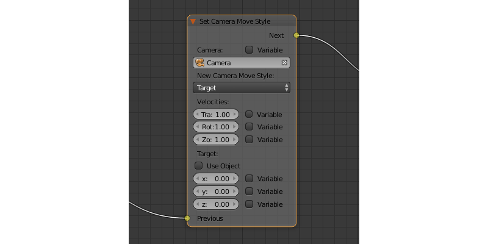Входные параметры¶
- Previous
Предыдущая нода.
Выходные параметры¶
- Next
Следующая нода.
Внутренние параметры¶
- Camera
Камера, режим перемещения которой будет изменён.
- New Camera Move Style
Задаёт новый режим перемещения выбранной камеры. Доступно четыре варианта:
Hover,Eye,TargetиStatic.
Следующие параметры недоступны в том случае, если параметр New Camera Move Style имеет значение Static:
- Translation
Задаёт скорость перемещения камеры. Значение по умолчанию - 1.0.
- Rotation
Задаёт скорость поворота камеры. Значение по умолчанию - 1.0.
- Zoom
Задаёт скорость приближения и удаления камеры. Значение по умолчанию - 0.10. Этот параметр доступен только в том случае, если параметр
New Camera Move Styleимеет значениеHoverилиTarget.
Следующие параметры используются для задания цели или точки привязки камеры. Они доступны только если параметр New Camera Move Style имеет значение Hover или Target.
- Use Object
Эта опция включает и выключает использования объекта сцены в качестве цели или точки привязки камеры (в зависимости от типа камеры). Если опция включена, появляется текстовое поле для задания объекта. Эта опция деактивирована по умолчанию.
Если параметр Use Object деактивирован, становятся доступны следующие три опции:
- x
X-координата цели или точки привязки камеры.- y
Y-координата цели или точки привязки камеры.- z
Z-координата цели или точки привязки камеры.
Set Camera Limits¶
Эта нода применяется для настройки ограничений движения камеры. Нода содержит список всех ограничений, доступных в движке, но применяет только ограничения, совместимые с типом камеры.

Входные параметры¶
- Previous
Предыдущая нода.
Выходные параметры¶
- Next
Следующая нода.
Внутренние параметры¶
- Camera
Камера, ограничители движения которой будут изменены.
- Distance Limits
Задаёт параметр
Distance Limits, доступный для камер типов Target и Hover.- Hor. Rotation Limits
Задаёт параметр
Horizontal Rotation Limits, доступный для камер типов Target и Eye.- Vert. Rotation Limits
Задаёт параметр
Vertical Rotation Limits, доступный для камер типов Target, Hover и Eye.- Pivot Translation Limits
Задаёт параметр
Pivot Translation Limits, доступный для камер типа Target.- Hor. Translation Limits
Задаёт параметр
Horizontal Translation Limits, доступный для камер типа Hover.- Vert. Translation Limits
Задаёт параметр
Vertical Translation Limits, доступный для камер типа Hover.
Object¶
Show Object¶
Используется для отображения объектов.
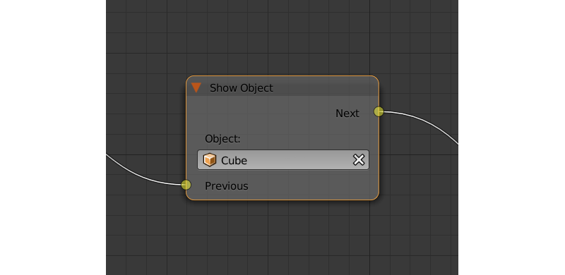Входные параметры¶
- Previous
Предыдущая нода.
Выходные параметры¶
- Next
Следующая нода.
Внутренние параметры¶
- Object
Объект, который нужно отобразить.
- Process child objects
Если этот параметр включён, объекты-потомки также будут показаны.
Hide Object¶
Используется для скрытия объекта.

Входные параметры¶
- Previous
Предыдущая нода.
Выходные параметры¶
- Next
Следующая нода.
Внутренние параметры¶
- Object
Объект, который нужно скрыть.
- Process child objects
Если этот параметр включён, объекты-потомки также будут скрыты.
Transform Object¶
Используется для изменения координат, размеров и углов поворота объекта.

Входные параметры¶
- Previous
Предыдущая нода.
Выходные параметры¶
- Next
Следующая нода.
Внутренние параметры¶
- Object
Объект, который нужно трансформировать.
- Space
Этот параметр определяет систему координат, которая будет использована для трансформации объекта. Может принимать одно из следующих значений:
World- глобальная система координат.Parent- система координат объекта, который является предком объекта, указанного в параметреObject. Точка привязки родительского объекта используется как центр координат, а углы наклона задают направления координатных осей.Local- локальная система координат выбранного объекта. Схожа с системой координат родительского объекта, но в данном случае точка привязки самого объекта используется в качестве начала координат.
Значение по умолчанию -
World.- Location
Перемещение объекта по осям
X,YиZ. По умолчанию все три значения равны нулю. Значения могут быть заданы в самой ноде либо с помощью переменной (если включена опцияVariable).- Rotation
Углы поворота объекта вокруг осей
X,YиZ. По умолчанию все три угла равны нулю. Значения могут быть заданы непосредственно в ноде или через переменные (в том случае, если включена опцияVariable).- Scale
Масштаб объекта. Может быть задан напрямую или с помощью переменной (если включена опция
Variable). По умолчанию равен нулю.- Duration
Время (в секундах), которое займёт трансформация. Может быть задано как напрямую, так и посредством переменной (для этого должна быть включена опция
Variable). По умолчанию равно нулю.
Move To¶
Позволяет перемещать объекты.
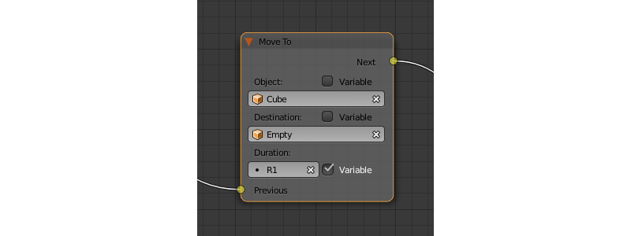Входные параметры¶
- Previous
Предыдущая нода.
Выходные параметры¶
- Next
Следующая нода.
Внутренние параметры¶
- Object
Объект, который требуется переместить.
- Destination
Цель (объект, источник света, камера и т.п.), к которой перемещается объект. После того, как перемещение завершится, координаты объекта и цели будут совпадать.
- Duration
Время (в секундах), которое займёт перемещение. По умолчанию равно нулю (в этом случае объект не движется, а мгновенно перемещается к точке назначения). Может быть задано как в самой ноде, так и с помощью переменной (если активирован параметр
Variable).
Apply Shape Key¶
Позволяет задать значение параметра Shape Key.

Входные параметры¶
- Previous
Предыдущая нода.
Выходные параметры¶
- Next
Следующая нода.
Внутренние параметры¶
- Object
Объект, к которому нужно применить трансформацию.
- Shape Key
Ключ формы, который нужно применить к объекту.
- Value
Степень влияния выбранного ключа формы на объект. Значение может быть задано в самой ноде или взято из переменной. Изменяется в пределах от 0 до 1.
Outline¶
Позволяет управлять эффектом обводки объекта.

Входные параметры¶
- Previous
Предыдущая нода.
Выходные параметры¶
- Next
Следующая нода.
Внутренние параметры¶
- Object
Объект, эффект обводки которого требуется настроить.
- Operation
Операция, которую следует произвести с обводкой объекта. Этот параметр может принимать одно из следующих значений:
PLAY - включает анимацию обводки
STOP - выключает её
INTENSITY - позволяет настраивать интенсивность обводки
- Intensity
Интенсивность обводки объекта. Этот параметр появляется только если параметр
Operationимеет значениеINTENSITY. Интенсивность может быть задана численно или взята из переменной (для этого нужно активировать параметрVariable).
Set Shader Node Param¶
Позволяет установить значение одного или нескольких параметров шейдерной ноды. В данный момент поддерживаются ноды Value и RGB.
Входные параметры¶
- Previous
Предыдущая нода.
Выходные параметры¶
- Next
Следующая нода.
Внутренние параметры¶
- Object
Объект, материал которого нужно отредактировать.
- Material
Материал, параметры которого нужно изменить. Должен использовать ноды.
- Node
Нода, параметры которой нужно изменить. На данный момент поддерживаются только ноды
ValueиRGB.- Parameters
Доступные для редактирования параметры выбранной ноды. Значения этих параметров могут быть заданы непосредственно в самой ноде или взяты из указанных переменных (для этого нужно активировать параметр
Variable).
Inherit Material¶
Позволяет скопировать атрибуты одного материала на другой.
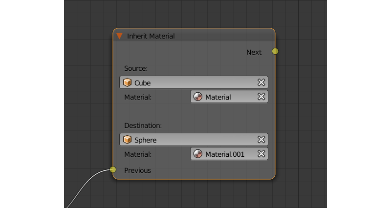Входные параметры¶
- Previous
Предыдущая нода.
Выходные параметры¶
- Next
Следующая нода.
Внутренние параметры¶
- Source
Объект, которому присвоен материал, который требуется скопировать.
- Material
Материал, который требуется скопировать.
- Destination
Объект, которому требуется присвоить скопированный материал.
- Material
Материал, который будет заменен скопированным материалом.
Operations¶
Variable Store¶
Сохраняет числовое или строковое значение в переменную.

Входные параметры¶
- Previous
Предыдущая нода.
Выходные параметры¶
- Next
Следующая нода.
Внутренние параметры¶
- Var. name.
Имя переменной. Может быть выбрано из списка переменных либо задано самостоятельно (если включен параметр
New variable).- Var. type
Тип переменной. Может иметь значения
Number(численная переменная) иString(строковая переменная).- New Variable
Если этот параметр активирован, имя переменной может быть задано самостоятельно (а не выбрано из списка переменных). Может применяться для обмена данными с сервером.
- Global
Включение этого параметра делает переменную глобальной. Доступен только если выбран параметр
New Variable.
- Num./Str.
Численное либо строковое (в зависимости от значения параметра
Var. type) значение, присваиваемое переменной.
Math Operation¶
Выполнить математическую операцию и сохранить результат в регистр. Любой из параметров (операндов) может быть либо числовым значением, либо переменной.

Входные параметры¶
- Previous
Предыдущая нода.
Выходные параметры¶
- Next
Следующая нода.
Внутренние параметры¶
- Operation
Математическая операция, производимая над операндами. Может иметь один из следующих типов:
Random - генерация случайной величины больше первого операнда и меньше второго.
Add - сумма операндов.
Multiply - произведение операндов.
Subtract - разность операндов.
Divide - частное операндов.
Sin - синус угла (в радианах), заданного первым операндом.
Cos - косинус угла (в радианах), заданного первым операндом.
Tan - тангенс угла (в радианах), заданного первым операндом.
ArcSin - арксинус значения, заданного первым операндом.
ArcCos - арккосинус значения, заданного первым операндом.
ArcTan - арктангенс значения, заданного первым операндом.
Log - логарифм первого операнда; в качестве базы используется второй операнд.
Min - возвращает наименьший из двух операндов.
Max - возвращает наибольший из двух операндов.
Round - округляет первый операнд.
Mod - остаток от деления первого операнда на второй.
Abs - значение первого операнда по модулю.
- Operand1
Первый операнд. Может представлять собой численное значение либо ссылку на одну из переменных (в случае, если активирован параметр
Variable).- Operand2
Второй операнд. Аналогичен первому.
- Destination
Переменная, в которую помещается результат операции.
String Operation¶
Выполнить операцию над строковыми переменными и сохранить результат в переменную.
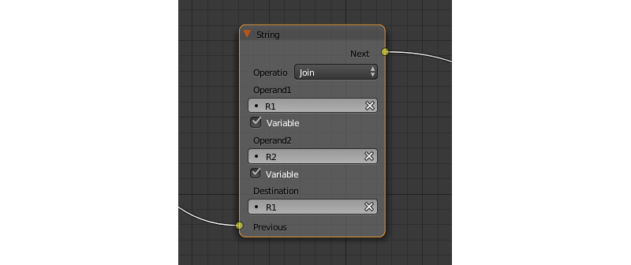Входные параметры¶
- Previous
Предыдущая нода.
Выходные параметры¶
- Next
Следующая нода.
Внутренние параметры¶
- Operation
Операция, которую нужно произвести над строками. Может иметь одно из следующих значений:
Join - объединить первую строку со второй.
Find - записывает в переменную позицию первого вхождения второй строки в первую. Если вхождений нет, в переменную записывается результат -1. Следует иметь в виду, что символы строки нумеруются, начиная с нуля, а не с единицы.
Replace - найти содержимое второй строки в первой и заменить третьей.
Split - разделить первую строку на две части, используя первое вхождение второй строки как маркер места разделения.
Compare - сравнить первую строку со второй. Для работы этой операции требуется определить логическое условие. Если условие выполняется, в
Destinationбудет будет записана единица, если нет - ноль.
- Condition
Логическое условие, по которому сравниваются строки. Этот параметр появляется только если параметр
Operationимеет значениеCompare. Аналогично параметруConditionнодыConditional Jump.- Operand1
Первая строка. Может быть задана в самой ноде или с помощью переменной.
- Operand2
Вторая строка. Аналогична первой.
- Operand3
Этот параметр появляется только если параметр
Operationимеет значениеReplace. Здесь задаётся строка, которой будет заменена вторая строка.- Destination
Переменная, в которую будет сохранён результат операции.
- Destination2
Этот параметр появляется только в том случае, если параметр
Operationимеет значениеSplit. Определяет переменную, в которую будет сохранена вторая половина разделённой строки.
Sound¶
Play Sound¶
Позволяет воспроизводить звук спикера.

Входные параметры¶
- Previous
Предыдущая нода.
Выходные параметры¶
- Next
Следующая нода.
Внутренние параметры¶
- Speaker
Источник звука, который требуется активировать.
- Do Not Wait
Если этот параметр активирован, управление будет передано следующей ноде сразу же после того, как началось воспроизведение звука. В противном случае это произойдёт только после того, как звук закончится.

{kind=link}
{kind=link}
{kind=link}
{kind=link}
{kind=link}
{kind=link}
{kind=link}
{kind=link}
{kind=link}
{kind=link}
{kind=link}
{kind=link}
{kind=link}
{kind=link}
Network¶
Send Request¶
Позволяет отправить HTTP GET запрос на указанный URL и поместить значения полей ответа в переменную.
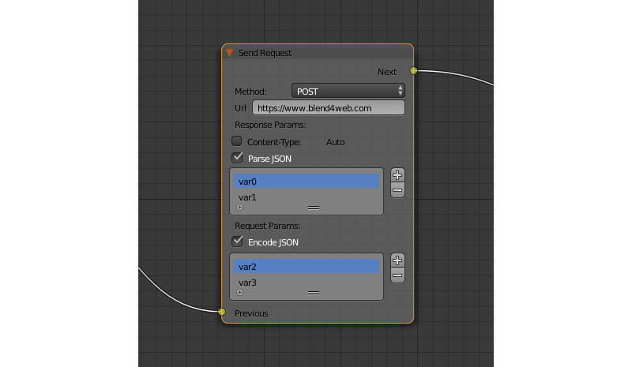{kind=link}
Входные параметры¶
- Previous
Предыдущая нода.
Выходные параметры¶
- Next
Следующая нода.
Внутренние параметры¶
- Method
Метод отправки запроса. Может иметь одно из двух значений:
GET - отправляет запрос на получение данных с сервера.
POST - отправляет данные на сервер.
Значение по умолчанию -
GET.- Url
Адрес, на который следует отправить запрос. По умолчанию имеет значение “https://www.blend4web.com”.
- Response Params
Задаёт переменную, в которую будут сохранены данные с сервера.
Примечание
Информация, полученная с сервера, должна быть в формате JSON:
{
"var0": 1,
"var1": 10,
"var2": 144
}
- Content-Type
Определяет формат запроса. Состоит из типа и подтипа, например:
text/plain. Значение по умолчанию -Auto. Используется для переназначения заголовка HTTP-запроса.- Request Params
Задаёт переменную, содержащую JSON-объект, который будет отправлен на сервер. Этот параметр доступен только если параметр
Methodимеет значениеPOST. Значение по умолчанию -R1.
JSON¶
Используется для кодирования и декодирования сложных JSON-объектов.
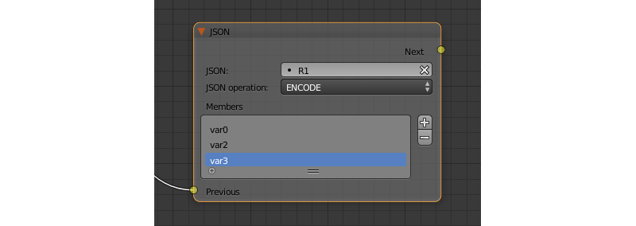{kind=link}
Входные параметры¶
- Previous
Предыдущая нода.
Выходные параметры¶
- Next
Следующая нода.
Внутренние параметры¶
- JSON
Сcылка на JSON-объект, который нужно кодировать или декодировать. По умолчанию имеет значение
R1.- JSON Operation
Операция, которую нужно произвести над JSON-объектом, указанном в параметре
JSON. Может иметь одно из двух значений:ENCODEкодирует объект,PARSEдекодирует его. Значение по умолчанию -ENCODE.- Paths
Список путей к переменным внутри объекта JSON. Пути используются для определения внутренней структуры объекта. Путь должен состоять из нескольких идентификаторов (разделённых точками), указывающих адрес поля JSON. Если имя фрагмента пути состоит только из цифр, такое имя интерпретируется как индекс массива. Пути создаются и удаляются вместе с переменными (в списке
Variables); один путь всегда соответствует одной переменной. Список путей может использоваться как для кодирования, так и для декодирования объектов JSON. По умолчанию список пуст.- Variables
Список переменных, которые будут использованы для кодирования или декодирования JSON-объекта (в зависимости от значения параметра
JSON Operation). Имена и количество переменных могут быть настроены. Этот список также пуст по умолчанию.
Кодирование объекта JSON с помощью логической ноды JSON.¶

Логическое дерево на изображении выше кодирует объект JSON и сохраняет его в переменной R1. Закодированный объект JSON будет иметь следующий вид:
{
"main":{
"part1":7,
"part2":12,
"part3":"abc"
}
}
Декодирование объекта JSON с помощью логической ноды JSON.¶

Логическое дерево на изображении выше получает объект JSON с сервера, сохраняет его в переменной R1 и декодирует объект. Объект JSON имеет следующий вид:
{
"a": {
"b": 17,
"c": "abc"
}
}
При декодировании объекта JSON в этом примере создаются три переменные (создавать их заранее не требуется) с именами var0, var1 и var2, которые содержат разные части объекта JSON. В данном случае переменная var1 будет иметь значение, равное 17, переменная var2 будет иметь значение “abc”, а переменная var0 будет содержать следующий фрагмент объекта JSON:
{
"b": 17,
"c": "abc"
}
Page Param¶
Позволяет сохранить произвольный параметр веб-страницы в выбранной переменной.

Входные параметры¶
- Previous
Предыдущая нода.
Выходные параметры¶
- Next
Следующая нода.
Внутренние параметры¶
- Param Name
Имя параметра веб-страницы.
Если параметр с данным именем присутствует в URL-строке, то его значение будет сохранено в переменную, определенную полем
Destination.- Destination
Переменная, в которую следует сохранить параметр.
Page Redirect¶
Служит для перенаправления на другие веб-страницы. По этой причине нода всегда находится в конце логической цепочки и не имеет выходных параметров.
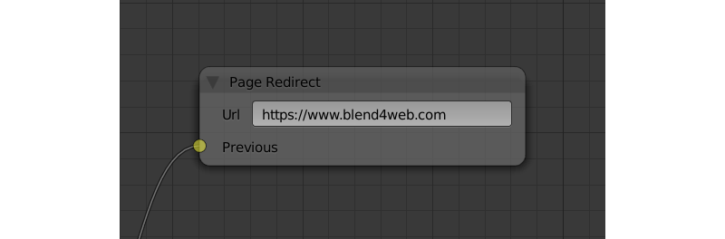{kind=link}
Входные параметры¶
- Previous
Предыдущая нода.
Выходные параметры¶
Отсутствуют.
Внутренние параметры¶
- Url
Адрес страницы, которая будет открыта. По умолчанию имеет значение “https://www.blend4web.com”.
Debug¶
Console Print¶
Позволяет выводить значения переменных и дополнительную информацию в консоли браузера. Может использоваться для отладки логики.

Входные параметры¶
- Previous
Предыдущая нода.
Выходные параметры¶
- Next
Следующая нода.
Внутренние параметры¶
- Message
Сообщение, которые будет напечатано в консоли вместе со значениями переменных.
- <имя переменной>
Имя одной из переменных, значение которой нужно вывести в консоли. По умолчанию нода
Console Printимеет один параметр такого типа, также имеется возможность создавать новые и удалять уже существующие (нода может и не иметь ни одного параметра этого типа).
Deprecated¶
Select (Deprecated)¶
Примечание
Устарел! Не рекомендуется использовать! Взамен следует использовать ноду Switch Select
Аналогично ноде Select & Play, за исключением того, что вместо анимации осуществляется переход. Указанная функция позволяет реализовать более сложную логику, поскольку появляется возможность распознавания результата выбора пользователя.
Select & Play Timeline (Deprecated)¶
Примечание
Устарел! Не рекомендуется использовать! Взамен следует использовать комбинацию нод Switch Select и Play Timeline.
Ожидать, когда пользователь выберет объект (с помощью клика мышью в версии движка для десктопа, либо нажатия на экране в мобильной версии). Если выбран объект, указанный в параметрах ноды, начать играть анимацию аналогично ноде Play Timeline, если же был выбран любой другой объект - немедленно передать управление следующей ноде.
Select & Play Animation (Deprecated)¶
Примечание
Устарел! Не рекомендуется использовать! Взамен следует использовать комбинацию нод Switch Select и Play Timeline.
Ожидать, когда пользователь выберет объект (с помощью клика мышью в версии движка для десктопа, либо нажатия на экране в мобильной версии). Если выбран объект, указанный в параметрах ноды, начать играть анимацию аналогично ноде Play Animation, если же был выбран любой другой объект - немедленно передать управление следующей ноде.
Layout¶
Empty¶
Простая нода, не выполняющая никаких действий кроме передачи управления следующей ноде. Может применяться для объединения нескольких логических нитей в одну или для того, чтобы сделать логическое дерево более простым для понимания.
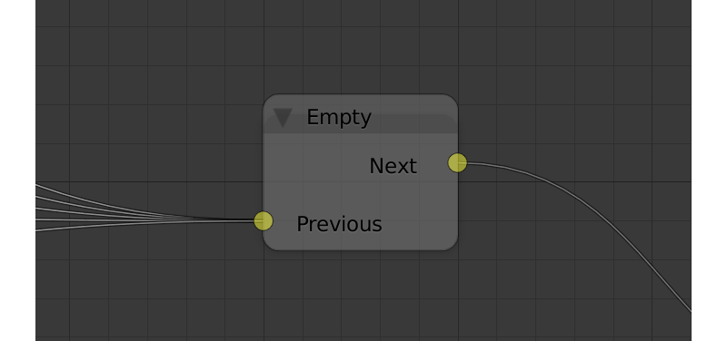{kind=link}
Входные параметры¶
- Previous
Предыдущая нода (либо несколько нод).
Выходные параметры¶
- Next
Следующая нода.
Внутренние параметры¶
Отсутствуют.
Reroute¶
В редакторе логики также присутствуют элементы Reroute - специальные ноды, который не выполняют никаких операций, а только передают управление следующей ноде (или следующему элементу Reroute). Они могут применяться для создания циклических структур или для того, чтобы сделать логическую цепочку более понятной и лёгкой для восприятия.
В отличие от ноды Empty, через элемент Reroute может проходить только одна логическая нить.
{kind=link}
Примечание
Выходной параметр не может быть подключён к входному параметру той же ноды. В случае, когда это требуется сделать (например, для того, чтобы зациклить выполнение какой-либо операции), следует использовать Reroute.
Отладка¶
Для отладки имеется возможность отключения (muting) нод. Для этого необходимо выделить ноду и нажать горячую клавишу M. Отключенная нода не выполняется, но при этом передает управление следующей ноде. Если у отключенной ноды имеется несколько выходов, то будет происходить выполнение ветки со стороны выхода отрицательного результата (Miss, False).